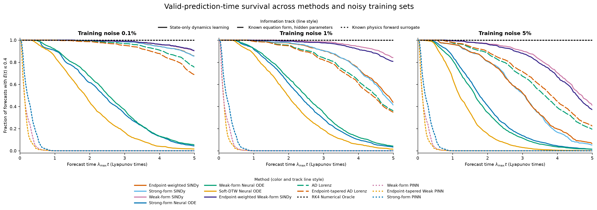

Research note · Draft · Updated September 2026
Weak forms, weighted windows, and Lorenz
Can an integrated equation make learned dynamics more robust to noisy observations? In this Lorenz63 benchmark, weak-form SINDy gives up some clean-data efficiency but degrades much more slowly as training noise rises. Giving less weight to windows near the ends of a trajectory does not add a consistent benefit.
The newer experiments sharpen that result rather than replacing it. Known-form integral matching remains strong, direct foundation-model forecasts are useful but belong to a different information track, and a weakly trained Panda-to-SINDy conditioner improves on unseen source systems but fails a reserved Lorenz gate.

The benchmark
The reference system is Lorenz63, with \(\sigma = 10\), \(\rho = 28\), and \(\beta = 8/3\):
After a 100-time-unit spin-up, states are sampled every 0.01 time units. Each of five final splits contains 64 training trajectories of length 20, 32 validation initial conditions, and 128 held-out test initial conditions. Hyperparameters are selected on a separate development split and then frozen. Gaussian noise is added only to training observations, at 0%, 0.1%, 1%, or 5% of each coordinate's clean training standard deviation.
Forecast quality is measured by valid prediction time, or VPT. It ends when normalized squared state error first exceeds 0.4 and is reported in Lyapunov times, \(\lambda_{\max}t\), with \(\lambda_{\max}\approx 0.9134\). A survival curve asks what fraction of forecasts have remained valid up to each time.
Moving the derivative off the data
Strong SINDy estimates time derivatives from observed states and fits a polynomial vector field. That derivative estimate is fragile under noise. Weak SINDy instead fits integrated equations. For a compact test function \(\phi\) and candidate library \(\Theta\), integration by parts gives
The derivative acts on the known test function rather than the noisy observations. The implementation uses 81-sample windows, a 20-sample stride, four polynomial–Legendre test functions, and trapezoidal quadrature. The weak variants share a degree-two library and the same fitting settings.
Endpoint-weighted weak SINDy leaves each local weak integral unchanged, then weights the resulting regression rows by the window center. The smooth taper is
The endpoint weights are zero and are normalized to unit mean. Both sides of each regression row are multiplied by \(\sqrt{w}\). Uniform weights exactly recover the unweighted weak fit. The frozen threshold is zero, so these benchmark runs test estimation rather than sparse-term pruning; the quadratic library already contains the true Lorenz terms.
The core result
The accepted benchmark gives these restricted mean VPTs over the full valid evaluation horizon. Higher is better.
| Training noise | Strong | Weak | Weighted weak |
|---|---|---|---|
| 0% | 8.268 | 6.911 | 6.903 |
| 0.1% | 6.616 | 6.933 | 6.968 |
| 1% | 4.781 | 6.489 | 6.167 |
| 5% | 3.037 | 4.763 | 4.656 |
At 5% noise, weak SINDy retains about 1.73 more Lyapunov times than strong SINDy. Their 95% bootstrap intervals are 4.623–4.915 and 2.824–3.241 LT. Weighted weak SINDy reaches 4.656 LT, with an interval of 4.383–5.060 LT.
The supported claim is weak-form noise robustness. Endpoint weighting is nearly neutral on clean data, slightly ahead at 0.1% noise, and behind the unweighted weak fit at 1% and 5%. This benchmark does not support a consistent advantage from the extra taper.
What the new curves add
Integral-matching Lorenz receives the exact equation form but not its parameters. It pools cumulative trapezoidal integral equations across training trajectories and solves one through-origin regression for each of \(\sigma\), \(\rho\), and \(\beta\). This avoids derivative estimation, but it has more structural information than state-only SINDy.
| Method | Input or noise | VPT |
|---|---|---|
| Integral matching | 0 / 0.1 / 1 / 5% | 8.684 / 9.046 / 6.950 / 4.120 |
| Panda | Clean 512-point prefix | 2.217 |
| Chronos-T5-small | Clean 512-point prefix | 0.549 |
Integral matching's mean parameter-relative error rises from 0.000089 on clean training data to 0.008950 at 5% noise. The small increase in VPT from 0% to 0.1% lies within estimator and split variation; it is not evidence that noise helps.
Panda is a multivariate forecaster. The Chronos adapter treats the three coordinates independently, predicts in 64-step blocks, and recursively appends those predictions. Their comparison supports Panda over this particular channel-wise Chronos adapter on canonical Lorenz, not a universal ranking of foundation models. Neither forecast curve is a common-information competitor to SINDy: both receive a clean test prefix, external pretraining, and no target-time fitting.
Can a pretrained model emit the equation?
A later experiment asked for something harder than direct forecasting. A 128-sample prefix was mapped through a frozen 1,536-dimensional Panda embedding and an ordered one-layer GRU. A fusion network then emitted support and coefficient heads for a ten-term quadratic library across three state equations: one fixed autonomous SINDy model per prefix, with no target-time optimization or sparse-regression solve.
The architecture was trained on 1,024 trajectories from four non-Lorenz source families and selected on 128 Sprott-B trajectories. The matched ablation changed only the equation loss and a finite-horizon occupation-measure penalty:
| Training objective | MSE | Best epoch |
|---|---|---|
| Strong residual | 1.34582 | 5 |
| Weak residual | 1.19212 | 35 |
| Strong + Birkhoff-MMD | 1.34582 | 5 |
| Weak + Birkhoff-MMD | 1.19057 | 260 |
The raw-GRU reference was 1.21226. Most of the improvement came from the derivative-free weak equation; the Birkhoff-MMD term added only 0.13% beyond weak form alone. Here Birkhoff-MMD is a tapered, finite-horizon comparison of predicted and true occupation measures. It is not invariant-measure recovery, and it is not Birkhoff averaging inside Panda. It is also distinct from the endpoint weighting above: that taper weights weak-regression rows, while this one weights forecast samples inside an offline training loss.
This was a one-seed comparison. All four arms eventually encountered non-finite source loss, so selection retained the best earlier finite checkpoint. Every arm also used Panda; the experiment therefore does not isolate a causal contribution from the foundation embedding.
The selected model then received one frozen audit on 16 reserved Lorenz prefixes. Every rollout was finite, but its mean normalized MSE was 2.38643 versus 2.28153 for copying the final context state: a ratio of 1.04598, or 4.60% worse. The source and held-out MSEs use slightly different normalization, so each should be read against its own registered baseline rather than compared directly. The gate failed, so the experiment stopped before CTF4Science. This is target-time zero-update inference, not verified dataset-exclusion zero-shot learning, because Panda's pretraining exposure is unknown.
What I take from it
- When SINDy is fitted to noisy Lorenz data with the correct library, weak equations provide the clearest robustness gain.
- The matched endpoint taper is an informative negative result: it does not consistently improve the weak fit.
- Integral matching is strong when the equation form is known, but that is a different prior-information contract.
- Foundation models can forecast dynamics directly, yet turning their representations into one stable global equation remains much harder.
- The amortized weak objective helped across unseen source systems, but honest held-out gating showed that the improvement did not transfer to Lorenz.
Code and evidence: benchmark repository, core Lorenz results, survival extension, and conditioner audit. Local data: core table, extension summary, conditioner summary, and provenance.